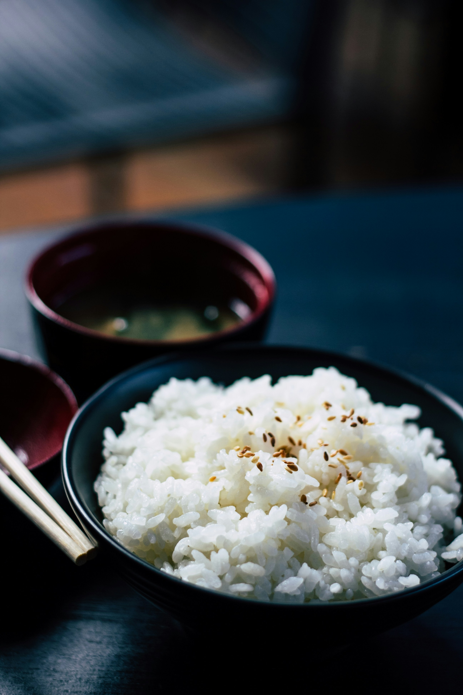

Home
South Indian cocanut Rice

Description
This coconut rice is perfect! I tried many different ways to duplicate my favorite restaurant's coconut rice
after they went out of business. It's delicious topped with toasted coconut and chopped cilantro.
Submitted by Margaret Thomas
Ingredients
- Coconut milk: This rich coconut rice recipe starts with a can of coconut milk.
- Water: You’ll need 1 ¼ cups of water.
- Sugar: Two teaspoons of sugar add sweetness.
- Salt: 1 ½ teaspoons of salt enhances the overall flavor of the coconut rice.
- Jasmine rice: Opt for jasmine rice for this recipe.
- Coconut oil: Stir in 1 teaspoon coconut oil at the end for added flavor.
Steps
- Gather the ingredients.
- Place rice in a fine mesh strainer, and rinse with cold water, stirring rice using your fingers to remove
excess starch, until water from rice runs clear, about 1 minute.
- Place rinsed rice, coconut milk, water, sugar, and salt in a medium saucepan; stir until sugar dissolves,
about 1 minute.
- Bring mixture in saucepan to a boil over medium heat. Cover, reduce heat to low, and simmer, undisturbed,
for 11 minutes. Turn off heat; steam, covered, until rice is tender and liquid is absorbed, about 10
minutes. Uncover and gently stir in coconut oil.
- Enjoy!